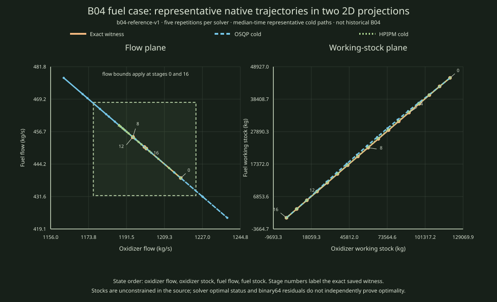

Repeated native solver runs, shown as a diagnostic illustration
B04 repeated benchmark trajectories as two projections of the 4D state
The left panel plots oxidizer flow against fuel flow. The right plots the two working stocks. Each path is one cold run selected because its solve time is closest to the backend's median across five repetitions; paths are not averaged.

Download the two representative native attempt rows · Open the exact reference witness · Download canonical comparison records · Open timing summary
b04-reference-v1 input. The solver output is preserved with its raw attempt rows. State/control feasibility diagnostics use binary64 residuals and remain inconclusive.Recorded solver values
| Attempt | Original norm | Max residual | Evidence status |
|---|---|---|---|
| Exact saved witness | 160.880653945527 | 0 (rational check) | exact global optimum for this frozen reference |
| OSQP cold, median-time rep 5 | 160.882458930638 | 1.91e-06 | inconclusive |
| HPIPM cold, median-time rep 1 | 160.880653945490 | 2.91e-11 | inconclusive |
Reproduce
python3 scripts/reports/mpc01/summarize_repeated_comparison.py --records --attempts --output-dir Runner source commit: 8d123f95d925cc7ee515088d0930c3a7b99eec10. Frozen input SHA-256: bc9e1b804b7878cb0da5c28c030893e1b41e7a2a34cb86b1c0fb8380ec780f6d. Attempt rows SHA-256: 2c931cf0da0b38ba9fdf946199388d6a4b9036559708d4371d61acdc063baba0.
Capture limits and evidence
All 140 native attempts completed. The solver process tree ran in a cgroup-v2 scope with an 8 GiB memory cap, swap disabled, one worker pinned to CPU 0, and a 300-second watchdog covering the full seven-fixture suite. Observed peak memory was 24,743,936 bytes, with no memory-limit or OOM events. Attempts ran sequentially, so the memory cap bounded each solver call; the wall watchdog is suite-level, not per-attempt.
The canonical records report memory as unlimited because the runner does not ingest the outer cgroup profile. The linked sidecar binds the actual enforced scope to the exact record and stdout hashes. A separate capped Fraction-checker process verified exact feasibility and candidate objective bounds for all 90 solver attempts classified as optimal. No source-mapped limiter profile was available, so these timings are descriptive and establish no performance winner.
Full comparison summary · Canonical comparison records · Enforced solver resource profile · Independent checker profile · 90 exact candidate checks · Build and input identity